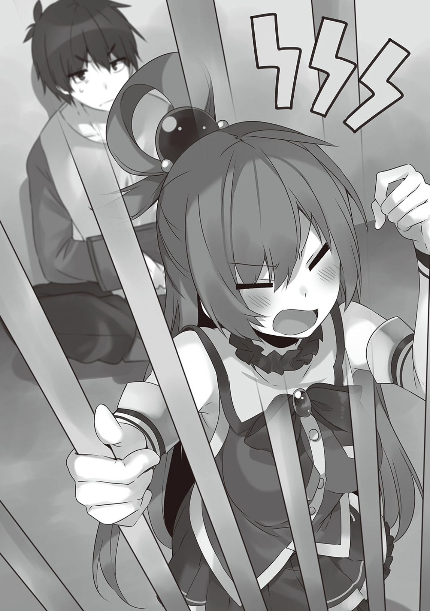

1
翌日早上。
我和爱丽丝在旅店前面给其他人送行。
「那么和真，我先走了。我感觉今天绝对能赢。因为在喝茶时茶梗竖起来了」
「阿库娅你不是一大早就冲完茶又把茶变回水，反反复复直到茶梗立起来为止吗？」
阿库娅要去赌场。
然后惠惠似乎有想单独调查的地方，打算独自行动。
「和真，爱丽丝大人就拜托你了。虽然很不甘心，不过既然对方不让我同行，我也没办法。我会调查这个城市，至少找到一些可以用于交涉的材料」
达克尼斯打算调查这个城市。
然后——
「那么我们也出发了。我们一定会把援助经费要到手的！」
我和爱丽丝按照昨天说的马上前往王城。
达克尼斯朝我打手势让我过来。
「和真，抱歉，都交给你了。本来这方面应该由我负责的……」
「别在意，我会想办法的。我说过的，不会让爱丽丝变得不幸」
听完我的回答，达克尼斯严肃地点了点头。
「那我出发了。我会赚一大笔钱，然后给和真买点土特产的！」
阿库娅说完后，我们纷纷前往目的地。
——到达王城后，我和爱丽丝立刻就被王子下绊了。
「说是比赛，是什么意思啊……」
我们被带到了训练场上。
迎接我们的王子得意地笑着对满面不解的爱丽丝说。
「没什么，我认为昨天谈判已经结束了。但是你们却要继续谈判。对我来说跟你们谈下去没有任何好处。不过……」
王子说到一半，朝着训练场上的骑士们扬起了手。
「我喜欢有趣的事情。你跟我在这里的部下们战斗，要是赢了，我就考虑同意你们的请求。你们要不要接受？」
「我接受！」
爱丽丝听了王子的提案，迫不及待地迅速回答。
而且还理所当然地拔出剑，笑嘻嘻地站在王子面前。
我姑且也是护卫，但是爱丽丝没有让我动手的打算。
周围的骑士们看来都没想到这位少女会答应比试，都呆了半晌……
「里维王子，请让我来！」
「不，由我来！我要好好修理这个不知天高地厚的小鬼」
「等一下，在下在这个骑士团位居末席。那么理应担任第一个对手……」
不知是不是觉得自己被外国人看扁了，骑士们争先恐后地想要证明自己。
王子为此表现得游刃有余。
「你们先等等……喂，由你出战没问题吗？不是那边的兄长大人上比较好？」
他戏弄般向爱丽丝提议。
「没问题。不劳烦兄长大人出手。我一个人就够了。各位，请随时开始！」
爱丽丝把拔出的剑随意地垂落在脚边，威风凛凛地宣告。
倒是骑士那边hold不住了。
『各位，请随时开始』也就是说——
「竟然不是一对一？就算是以武斗派著称的贝尔泽古一族的公主，也太小看我们了吧？」
恐怕是骑士们队长的男人杀气腾腾地走上前。
「我没有这个意思……不过，不管和几个人对战都可以，我随时准备好了」
是把这当成挑衅了吧，男人连开始的号令都不管就举起了剑——
「『Exterion』！」
爱丽丝轻松放出一道斩击，将举高到头上的剑砍断了。
「……啊？」
有人不由自主地发出了声音。
直到刚才还有在嘲笑或者发怒的骑士们都呆若木鸡，训练场的气氛都凝固了。
「爱丽丝，要是把他们一个个的剑都弄坏的话就没法训练了吧？看，那边有卷刃了的训练剑，用那种就行」
「啊！对，真是抱歉……对不起，把你的剑弄坏了」
爱丽丝带着歉意道歉后，剑被砍断的男人说，
「咦！？啊，呃，那个……不，不要紧，请不必在意……？」
他似乎还没理解到发生了什么事。
在众人惊恐的视线中，爱丽丝一路走到墙边，拿起一把搁在那里的训练剑。
「那么各位，请多多指教！」
她露出了灿烂的笑容。
「——那，那么，可以听听……我们的请求了嘛？」
「好的。请说吧」
训练场上横七竖八地躺着一动不动的骑士们。
变得格外老实的王子，坐在他们的中间。
爱丽丝大闹一场后依然滴汗未流，轻松地将训练用的剑插在地上，笑着对王子说。
「谢谢你肯听我们说！那么……」
「等一下，我答应听你们说，但没有说要出钱援助啊！别擅自推进话题！」
王子这辩解，就像是猜拳输了后才说要三盘两胜一样。
「喂，爱丽丝，趁现在骑士们都晕过去了，也就是没别人看见。这是个好机会，把他活埋了就回去吧」
「噫！？」
「不，不行啊，兄长大人，这样是拿不到钱的！」
爱丽丝的否定不是基于人道方面的理由，而是钱的方面。
看来我可爱的妹妹在不断成长啊。
「……一成」
王子像是呻吟般挤出一个词。
「咦？」
爱丽丝反问后，王子猛地抬起头说。
「一成！先给一成。嗯，嗯，确实至今一直维持着的防御经费一下子全停掉也是个问题。就继续给一成吧！」
「怎，怎么行！一成也太……」
听见爱丽丝悲伤的声音，王子总算露出自鸣得意的表情。
「作为乡下人，你已经让我很开心了。这只是相应的奖赏而已！想要更多的钱就好好满足我！」
「我明白了！那么请再来一队骑士团！」
「我不是这意思，谁说让你继续虐待我的部下了！我是说要逗我开心！」
眼见爱丽丝预想之外的反应，王子慌忙订正。
「逗你开心……那，那就，把我当成宝物的竹蜻蜓借你玩一天吧……」
「不要耍我！这是给小孩子玩的吧，我不是这个意思！」
王子喘着大气，瞪着爱丽丝说。
「明天！明天再到这里来。到时我会安排让你吓一跳的对手。要是你赢了的话，我就追加预算。你懂了吧！」
说完他就离开了训练场——
从王城的归途上——
爱丽丝低着头小声地开口。
「兄长大人，我只拿回了一成……」
她本来想趁这次的会面，讨回原本额度的援助，再进一步发动攻势增加经费。
但是反而被大幅度降低了援助经费，所以才会消沉吧。
虽然这也不是爱丽丝的错……
「你说啥呢，一天就拿到了一成。那么每天坚持过去威胁……拜托他二十天的话，就能变成原来的两倍了。从这个角度看，这不是很厉害的成果吗」
我随便扯了个理由给爱丽丝打气，她听完后，抬起头绽放出笑容。
「虽然我觉得没那么容易，不过我恢复斗志了。兄长大人，明天也请多多指教」
「交给我吧，不如说明天起我也会继续帮忙的」
就这样，
从这天开始，我和爱丽丝的谈判开始了——
2
「『Exterion』！」
「骗骗骗。骗人的吧！？」
一声悲鸣在训练场响起。
当然是王子的。
「哼，看来你错估了我妹妹的实力。区区的狮鹫，怎么可能是爱丽丝的对手」
「你，你刚才看见笼子里的狮鹫时，还不是吵着说卑鄙啊犯规啊之类的吗！」
狮鹫。
拥有与民居差不多大的个头，展翅飞翔时甚至连成年的牛马都能直接掳走，拥有狮子的躯体与大翅膀，还有鹫的头部的巨型怪物。
虽然比不上龙，但也是让众多冒险者畏惧的极其危险的对手。
「兄长大人，我办到了！」
「噢……噢。不愧是我的妹妹，干得好」
爱丽丝脸上布满笑意，一路小跑到我身边，我虽然有点吓到，还是称赞她的表现。
「那么，里维王子。那就按照约定……」
「我、我知道啦我知道啦！我会增加援助经费，所以快把剑收起来！别用剑尖对着我！」
被吓得快哭的王子说完后，爱丽丝放心地松了一口气。
不过王子的下一句话让她的笑容蒙上了阴霾。
「不过，只是增加而已。加上昨天的分，援助金额就恢复到之前的一成半吧。那么今天就到此为止……」
「这怎么行！至少请增加到两成！」
「噫，别用剑尖对着我……喂，太近了！剑尖都碰到脸了，你这是要威胁我！？」
情绪激动的爱丽丝不由握着剑凑了上去，这也难怪。
「没有威胁的意思，我只是想谈判……」
「那就先把剑收起来！」
哭丧着脸的王子，即使被剑尖逼到眼前也没有屈服，不知是不是出于王族的矜持。
还以为只是个臭小鬼，没想到还是有点志气的嘛。
不过，既然这个王子把我们当成乡巴佬。
那么——
「那要不要和我比试一下？」
就让他为自己的高傲付出代价。
「谁，谁会继续和你——」
「噢，别误会哦？连妹妹都打不赢的对手，要跟葬送了好几名魔王军干部的我进行战斗方面的比试，光派骑士和狮鹫那是远远不够的。说不定真要把龙带过来吧」
听见这话后王子咽了一口唾沫，而理解我的实力的爱丽丝，用『这人都在扯啥淡啊』的眼神看着我。
我会有点受伤的，请别这样看我。
「我说的比试是游戏方面的。你也是赌场大国的王子，应该也很喜欢赌博吧？」
昨天我们回到住处后，达克尼斯介绍了与这位王子相关的情报。
看来王子对游戏和赌博很着迷。
不如说，艾洛德是靠赌场立国的。
那么开国国王的子孙喜欢赌博也是理所当然的。
「跟我用游戏比试？要是你赢了就增加援助金额的意思吗？」
「就是如此。盘算赌博快赢的时候，不是有种加码的玩法吗？要不要和我来一发？」
反应果然够快，王子转眼就明白了我的意图。
根据达克尼斯收集的情报，王子很不服输。
她虽然在战斗方面不太能帮上忙，但却出乎意料地擅长这种不起眼的工作。
顺带一提，剩下两人一个在赌场输光了零花钱，另一个再次去了大葱鸭养殖场，用达克尼斯给她的零花钱，去享受狩猎大葱鸭残党的喜悦了。
就这次来说那两位也帮不上忙，先由她们去吧。
王子沉思了片刻，重重点了点头。
「好吧，如果我输了就把援助金额从一成半提高到两成。不过，你输的话要付出什么代价？」
糟糕，没考虑代价的问题。
既然是国家级别的要求，金额上肯定相当庞大。
能与之相称的东西……
「我明白了，就这样吧。要是你赢了，就给你我妹妹的捶肩券」
「我会加油的」
「你是傻子吗，那种东西有什么意义！钱，我说钱！给我钱或者与之等价的东西！」
就是没钱才来磨你的啊。
这时，爱丽丝有点畏缩地，从口袋里小心掏出某件东西。
「那如果输了的话，就把这个竹蜻蜓借你三天……」
「就说你掏这种玩具出来想干啥，我要这个有毛用！」
这个竹蜻蜓是我之前送给她的吧。
还像传家宝一样留着。
「算了，干脆这样，你们输了的话援助金直接归零，如何？不是降低，是归零。本来我就是被迫奉陪你们这种名为『谈判』的乞讨的。这种让步总得要吧。今后要是你们打算每天都来，不管你们的钱增长了多少，只要输了一次就归零。如何，还要比吗？」
王子像挑衅般咧嘴笑着。
原来如此，只要我们输一次，王子就能翻盘啊。
这一手并不坏。
——如果对手不是我和爱丽丝的话。
「好，就这样，那么比试内容由我来定」
没想到我会干脆接受，王子露出了惊讶的表情。
我在王子面前，从钱包掏出了一枚硬币。
然后先把双手藏在背后，再同时向王子伸出两个拳头。
「内容极其简单。就是猜猜刚才的一百厄里斯币藏在哪里」
「……也就是纯粹的赌运气吗？你是傻子吗？现在再取消也无效了哦？」
听见比试内容后，王子用可怜人的眼神看着我，爱丽丝突然开口说。
「对了，兄长大人拥有非比寻常的好运！原来如此，这样的话……！」
「……什么？」
王子听罢，脸颊上流下一道冷汗。
不过，事到如今他也没法说不比了，他盯着我的双拳片刻后……！
「这边……不，是这边！我决定选这边！」
王子指着我的右拳。
爱丽丝听见后，像祈祷一般双手合十。
而我露出一道邪笑后，王子惊讶得睁大了双眼。
「可惜！猜错了！」
「可恶啊啊啊啊啊————！」
我打开了王子所指的拳头，当然里面空空如也。
「兄长大人，成功了！这就是两成了！两成了！」
爱丽丝天真无邪地欢叫着，而王子依然游刃有余地轻轻一笑。
「别以为赢了一次就可以得意哦？我跟你们不一样，只要赢一次就够了。你们明天就好好努力吧！」
3
「<神圣雷光（Sacred·Lightningblare）>——！！」
一道白色的闪电刺下训练场正中。
闪电化为耀眼光芒的洪流，与暴风一起向四周轰开。
「「噫————！？」」
我和王子抱头蹲坐在训练场的角落里惨叫。
震耳欲聋的轰鸣停止后，地上堆着大量的石块。
这估计是勇者和最终BOSS对决时用的魔法吧。
「兄长大人，我办到了！」
造成这副惨状的本人满面笑容地跑过来。
今天爱丽丝的对手是成群的魔像。
王子判断一对一带什么大家伙过来也是白搭，就使出了数量优势的战术，然而……
「做得好，不愧是我的妹妹。如何？别再做这种浪费时间的事了，直接按照之前的额度来援助如何？」
「你刚才不是和我一起抱头惨叫嘛？这先不说，想要我提供援助经费就要一路赢下去。现在的预算是两成半。如何？今天也要跟我比试吗？」
面对王子挑衅的笑容，我默默掏出了厄里斯币。
「哼，有志气！我不知道你的运气有多牛，但我也是靠赌场起家的艾洛德王族。究竟你能赢到什么时候呢？」
听着王子的话，我默默弹起硬币。
然后迅速接住，并将双手藏在背后——
「——于是现在已经恢复到三成了。这样下去再过一周就能恢复原来的水平」
「……应该说不愧是你吗。你有没有办法为了这个世界运用你那强劲的运气啊」
今天我也赢了王子，在住处一边吃晚饭一边讲述至今的经过。
「和真先生和真先生，明天要不要跟我一起去？一起去赌场吧。明天一天我会尊称你为和真大人的」
「我才不要。话说，你昨天不是已经将零花钱全用光了嘛？今天究竟在干什么？」
对，她刚到这个城市时就早早将达克尼斯给的零花钱用光了。
但是阿库娅却自豪地朝我秀出了沉甸甸的钱包。
「今天我去冒险者工会了。你想想，来这里路上爱丽丝不是打败了很多怪物嘛？聪明如我，早就从爱丽丝打败的怪物尸体上收集了可以高价收购的部分」
「你只是将爱丽丝打败的怪物部位卖光了而已吧。喂，我不会说全部，至少拿出一半吧——好好交给爱丽丝」
我正要收缴她的钱包，阿库娅马上藏在肚子上缩成一团，发动防御姿态。
「那个，兄长大人。我并不是冒险者，是没法出售怪物素材的，我倒是不介意……」
「没关系爱丽丝，要是宠着她她就只会蹭鼻子上脸」
阿库娅判断这样下去会被收缴，立刻站起来进入战斗姿态。在我和她对峙时，吃完饭的惠惠擦着嘴说。
「明天我会看好阿库娅的。要是任由她行动搞不好会欠赌场钱」
也好，她的话应该不会像阿库娅那样沉迷赌博吧。
「我也没啥可以再调查了，明天开始干什么呢」
听见这句话后，阿库娅眼神一亮，马上凑近达克尼斯。
「呐，达克尼斯，不如明天你也一起来吧。我会作为赌场前辈好好指导你的」
「……该不是用光零花钱就想缠我要钱吧？」
看来就是要缠她了。
我丢下鼓起脸颊以示抗议的阿库娅。
「不管怎样。援助经费就交给我们吧。接下来就要凿王子一大笔了」
我和爱丽丝相视点头后，把看住阿库娅的任务塞给了有点不情不愿的达克尼斯。
——那之后。
「可惜，猜错了！」
「为啥啊啊啊啊啊！」
我和爱丽丝以谈判为名来往王城的一周里。
王子逐渐找不到和爱丽丝交手的对象，就把她排除在比试之外。赌上预算的战斗就纯粹是与我的比试了。
相对地一天变成了赌两次，只是猜硬币所在这种简单的赌博，虽然单纯，但确实引爆了王子不服输的心态。
「成功了呢，兄长大人，这样防御预算就恢复原来的水平了！之后就是为了与魔王军交战，原本打算来请求的发动攻势的援助预算……」
「等，等一下等一下！那方面的援助可不行。继续援助防御经费且不说，要是拿出向魔王军进攻的经费，会有各种问题的」
还以为按照至今为止的情况王子会接受进一步的比试的，但他却表现得意外地慎重。
「喂，你就这样输给我就满足了吗？作为赌场大国的王子，在赌博上输给被说成乡下人乡巴佬的国家的人，这样不会贻笑大方吗？」
我想方设法进行挑衅，但王子只是一笑置之。
「我怎么会接受这种显而易见的挑衅。至今会接受你们的比试，只不过是即使输了也跟现状没啥不同，赢了就有大义之名可以正式宣布取消援助而已。不过，我国不想刺激魔王军。所以并不会提供发动进攻的援助经费」
还以为他只是个单纯的笨蛋王子，结果比想象中厉害的
没办法，只好把真相爆出来了。
「真的可以吗？说不定下次就能赢了哦？」
「啰嗦。都输到现在了怎么可能突然赢一把，你当我是什么人。我可是赌场大国的王子……哦……？」
王子本来冷静的表情，变得目瞪口呆。
他盯着的是我刚打开的右手。
而刚才王子赌错的是左手。
「兄长大人，难道从第一场比试开始就两只手都没有握着硬币吗？」
虽然没有王子那么夸张，但是爱丽丝也挺惊讶的。
「对。聪明的爱丽丝还记得起初提出比试时，我说了什么吗？」
「说了什么？我想想……『内容极其简单。就是猜猜刚才的一百厄里斯币藏在哪里』对吧？……啊！」
「啊！」
王子紧随爱丽丝也反应过来了。
「对，我一开始就说这样说的。『猜猜藏在哪里』。而不是藏在哪一边。我只是在问硬币的位置而已。而关键的硬币就塞在屁股的口袋里！」
「哇！不愧是兄长大人！干这种阴险狡猾的勾当简直无人能出其右！」
眼看着爱丽丝放光的眼神，我不由得反问。
「你在夸我对吧？」
「是啊，在夸哦？」
爱丽丝发出银铃般的笑声。我内心正盘算着她肯定不是在夸我的时候。
「你，你你你这家伙！竟然对我使诈！你身为王族竟然不觉得卑鄙吗？」
「并不」
毕竟我不是王族嘛。
王子看我这反应，连语气都变得粗暴了。
「……所以才说你们这群乡巴佬！算了，身为赌场大国的王子却没有看透你的伎俩，我认栽。我不会要求你把钱退回来」
王子到头来还是没接受我的挑衅。
「再怎么挑衅我都没用。虽然援助防御的经费会继续提供，但不会增加。这是绝对不变的。……正确而言，提出要取消援助防御经费的是洛古克拉夫特，而我是因为不打算和乡下妹子结婚才顺便接受的。算了，虽然对没有胜利感到惋惜，不过我玩得挺开心的」
王子自顾自地总结完。
「那就永别了。祝愿你们能打倒魔王」
王子说了这种违心的话，催促我们离开。
「——就是这样，我打算让那个死小鬼吃点苦头」
「好，说得好，和真。区区只会赚钱的艾洛德，竟然看不起我们贝尔泽古，这还能忍！竟然如此嘲弄爱丽丝大人，看我不揍死那个小鬼！」
回到住处后，我没告诉窝在自己房间里消沉的爱丽丝，而悄悄找达克尼斯她们商量。
「我当然没有异议。嗯，攻城也好什么都好全交给我吧。红魔族是不会在自己的同伴，哪怕是小弟被嘲讽的时候坐视不管的」
「我不知道你们要干什么，但好歹也从爱丽丝那里拿到了怪物素材。只要不是可怕的事，我也可以协助你们」
其中两人涌现出前所未有的干劲，而剩下那人不知道她究竟有没有干劲。我继续说。
「那个死小鬼，我要让他为小看我而后悔……」
我把之前就在考虑的，万一要不到援助经费时的计划公布——
4
——到了早上，阳光从窗户洒入。
柔和的日光开始照亮微暗的房间的时候。
在这舒适的黎明中，我们的心情却在谷底。
「放我们出去啊！罪状呢！我们的罪状是啥！这是胡乱抓人！」
阿库娅从早上开始，就一边砰砰敲着牢笼门一边大喊。
对，我们进局子了。
还以为我的计划万无一失，没想到竟然失败了。
现在我们全部人都被解除武装，被警察关进了拘留所的牢房。
拘留所建筑物本身是石造的，就季节而言现在倒是比想象中暖和。
牢房就完全是石头搭的，嵌着铁格子的牢房里只有拘束住闹事的囚犯的锁链，还有简陋的厕所而已。
达克尼斯不知为何在牢里脸颊染红，一动不动地正坐着紧盯着锁链，这让我非常在意。
阿库娅的话使在牢房前写着文件的看守绷紧了脸。
「还，还说罪状……？你们居然还有脸说这个……你们深夜在城市附近发动噪音巨大的大魔法，还以为不会有人生气吗？」
惠惠双手握住了铁格子。
「我所住的城镇里，只会警告我说『城镇周围的地形会改变的，麻烦去远一点』而已。我在这城市附近也才第一次释放魔法，这个国家的人真是小肚鸡肠」

「笨蛋！真要说的话是你们国家的人都有毛病吧！城里的居民还以为战争开始了，吓得跳起来了！」
看守的话挺有道理。
「再过一会，检察官就来了。有什么理由跟她说去。不过嘛，深夜使用魔法将居民吵醒，也不算多严重的罪行。估计罚你们一笔钱就完了，别闹腾了乖乖呆着吧。」
听了看守的话我们没有再反驳，老实地在牢里等着。
——昨晚，趁着夜深人静之际，我们避开看门的耳目，偷偷溜出了城市外面。
起初是打算在王城里搞出点骚动就好了，我就拜托大家在市外做点引起骚动的事情。
这时，惠惠突然说既然有座小山丘，就可以来一发让王城都能听见的爆裂魔法，还说出了『自己很擅长这一手』之类的不明言论，于是就采用了。
趁着她们在市外发动魔法，我趁着混乱之际单身潜入王城。
入侵王子的卧室后，在床边留下匕首和书信。
书信上写着。
『愚蠢的人类啊，你们以为只要宣告中立我就会饶了你们？等那可恨的贝尔泽古灭亡之后，就轮到你们了！』
……就是这样。
我们创造出魔王军不会认同中立的气氛，让他们站到我们这边来。
彻底回到我们百试不爽的自导自演上来了。
这样他们大概就会产生危机感，然后协助我们……
剧本本来是这样写的——
天亮后，建筑物外传来人们外出的喧嚣时，那名女性出现了。
女性打扮整洁，五官清秀，洋溢着精明干练的气场，系着红色的马尾辫，目光锐利。
让我想起了阿克塞尔的塞娜检察官。
那人也有一种让人生畏的印象，她现在过得还好吧。
传闻说，她在解决某个事件后，以王都检察官的身份东山再起了。
女性把披着的外套挂在墙上后，沏了一壶红茶，瞥了牢内的我们一眼，然后默默把视线投向看守。
应该是问『就是这群人吗？』。
「由于有人深夜在市外使用爆裂魔法，我连忙赶到现场，结果发现他们被一群不死族追着到处跑。我认为没人会在这种时间专程跑到城市外面，为消灭不死族而使用爆裂魔法，所以把他们逮进来了。这份是报告书」
看守流利地回答后，指向放在桌子上的文件。
牢房外铺着地毯，上面除了桌子还有椅子和沙发。
让人没法跟警察收容犯罪者的设施联系起来。
检察官不知是不是注意到了我的视线，她喝了口红茶后，
「这里是靠赌场繁荣起来的艾洛德。一般不怎么会有凶恶的犯罪者。硬要说的话，这里更像是收容散尽家财连找住处的钱都没有了的人或者喝醉游客，不让他们冻死的保护设施……那么，就请你们挨个录口供吧」
这么说着，眼中闪出了冷光。
不知是不是有意而为，录口供就大大方方地在我们的牢房前进行。
似乎不会把我们带去其他窄小的房间，而是就坐在绒毯上的桌前听取我们的口供。
被录口供的人身后站着看守，以便在嫌犯有不轨举动的时候立刻控制。
现在似乎是要挨个听我们的口供，但为了不让嫌犯知道同伙被问到了什么，防止对口供，应该一个个进行审问才对啊。
我的疑问被检察官取出的眼熟的道具打消了。
「那么，就让我来好好问问你们吧……顺带一提。这是只要有人说谎就会响的魔道具……因此就算对好了口供也是没有用的，请如实回答」
检察官一边说着一边把小小的铃铛放到了桌上。
然后她交叉起十指，向眼前的人投来了锐利的目光。
「……嗯，再怎么说我也是护教骑士。以我信仰的厄里斯神之名起誓，我绝不会说谎」
……达克尼斯不知为何红着脸，眼中充满了期待的光芒。
检察官看见她的态度，小声说了句『不错』。
她看向文件，再次开口道。
「职业圣骑士，信仰是厄里斯教……那么，首先告诉我你的名字……」
「我保持沉默」
达克尼斯坚决地这么说道。
「……哈？」
检察官不禁抬起头，以疑惑的目光看着达克尼斯。
「我说我保持沉默。想要知道我的名字的话，拷问也好逼供也好随便来！但是，以达斯提尼斯家高贵的家名发誓，我是不会简单开口的！」
「达斯提尼斯小姐对吧……那个，我们是不会做拷问或是逼供那种事的。在现在这个能够靠魔法鉴别真伪的时代，不需要做那种落后于时代的事。你大可放心……达斯提尼斯家……那个有名的达斯提尼斯家？……怎么会……不过，铃没有响啊……？」
检察官疑惑地看着铃铛，嘴中嘟哝着什么。
……是不是我一个人说明情况会比较好啊。
想到接下来显而易见的发展，我开始心疼起检察官。
「那么达斯提尼斯小姐，你们为何会在那种地方施放魔法？」
「我保持沉默。想要让我开口的话就就用蛮力撬开吧」
达克尼斯顽固地拒绝配合。
这家伙到底是有多麻烦。
「……保持沉默的话，我就只有认为你是有什么见不得人的事了哦？虽然刚才说过不会使用过时的手段，但那一类的道具我还是有的……当然我没有使用的打算。你不用担心，量刑是不会太重的。不用逞强，照实说就好了。在我们判断嫌疑人在隐瞒什么重大事项的场合，是允许使用拷问手段的。最好不要太轻率……」
「正合我意！直接来最厉害的那种！」
检察官面对听了自己的话探出身子兴奋地喊出来的达克尼斯，检察官表情僵硬地向后仰去。
然后，她看向桌上的铃铛。
……当然，铃铛没有响。
看到铃铛没有响，检察官的表情变得更加僵硬。
「……那个，已经可以了……下一个！」
「——怎么会这样……被捕后遭到逼供和拷问的机会……我人生中可能再也不会有这样的机会了，竟然这么快就结束了……」
「你可不要因为自己的癖好给别人添太多麻烦啊」
一脸失落的达克尼斯回到了牢内，接下来换惠惠接受盘问。
显得有些疲劳的检察官看起来很令人同情。
惠惠坐到椅子上后，检查官调整好心情摆出一副吓人的表情，在桌上交叉起手指。
「……好了，你就是施放魔法的人对吧。是大魔法师么。那么首先请问一下你的名字」
「……我叫惠惠」
检察官保持着那副吓人的表情。
「……你说什么？」
「我叫惠惠」
听了惠惠的话，检察官不经意地看向铃铛。
……当然没有响。
惠惠看到了她的动作。
「喂，你对我的名字有什么看法的话不妨说来听听啊」
「不，没事！非常抱歉！」
检察官回过神来，慌忙地话题扭向正轨。
「那么，可以请你解释一下为什么要在深夜施放那么扰民的魔法么？」
「我有一日一爆裂的宿命。在阿克塞尔的时候，我每天都把这个当烟花放」
听到惠惠的这句话，检察官僵住了。
然后她又看向铃铛，但铃铛当然没有响。
虽然惠惠答非所问，但检察官似乎对一日一爆裂更加感兴趣。
「……没办法完成一日一爆裂的话你到底会怎么样？」
「我连想都不敢去想。弄个不小心可能会BOOM」
BOOM到底是怎样。
检察官似乎也是和我一样的感想，看着没有鸣响的铃铛小声嘀咕着。
话说铃铛到底为什么没有响啊。
难道真的会BOOM么？
「那么换个问题吧。在深夜施放爆裂魔法这种行为。你是怎样看待这种行为的？你不认为这是恶行么？」
「我不这么觉得。要问为什么的话，我前世毫无疑问是破坏神。因此破坏行为是正当的」
检察官从说着莫名其妙的话的惠惠身上移开视线，看向铃铛。
铃铛没有响。
……那个铃铛该不会是坏了吧？
「我说阿库娅，今天的你真是美到让我神往啊」
「哎呀哎呀，怎么啦，突然说这些？和真你是怎么啦？难道是因为这之前我们被搭讪了，其实有点嫉妒……」
叮铃。
阿库娅话音未落，桌子上的铃铛就突然响了起来。
「……请不要妨碍调查」
「抱歉，我是有点在意铃铛是不是坏了……偶哇！喂你住手，干嘛啊，我夸你你还掐我脖子啊！说到底，之前你为了确认铃铛坏没坏也对我做过同样的事吧！」
在我扒开勒住我脖子的阿库娅的时候，对铃铛没坏的事实感到稍微放心了的检察官放软了一点态度问惠惠。
「那么我再问一次。你为什么要在半夜施放爆裂魔法？」
「因为那就是我的人生」
听了她这句话检察官再次僵住了。
虽然她依旧看向了铃铛……
「…………呃，那下一个……」
但铃铛一声都没有响，检察官看着不响的铃铛身心俱疲般地说道。
「——我叫阿库娅。你可以当我是那三个人的领导者，或者说是监护人吧」
听到阿库娅的话，身处牢房中的我们三人愣愣地看向阿库娅。
准确地说，是看向了放在阿库娅面前的探知谎言的铃铛。
「阿库娅小姐……是么。和水之女神的名字一样呢」
检察官这么说着，但不知为何铃铛没有响。
……咦。
「我说，为什么那个魔道具没有响啊？」
「如果本人对此深信不疑那就不是谎言。惠惠说那些奇怪的话的时候铃铛不也没有响么」
「喂，你不妨说说『奇怪的话』是指什么啊」
按照达克尼斯的解释，那个蠢货是对自己身为我们的监护人这一点深信不疑么？
那我还真想抽她一耳光。
「那么请问你们为什么会在那种时间出现在那种地方？」
「那是因为我同伴中那个叫和真的男人常年欲求不满，我怕他大半夜夜袭良家妇女所以把他拖出城了」
那个杀千刀的，是报复我刚为了让铃铛响起来说的谎么。
话说刚才她还说自己是我们的领导和监护人……真的像达克尼斯说的那样，是她自己深信不疑而已么？恐怕只是因为那家伙脑子一直都很不正常吧……
检察官忍不住看向铃铛。不知为何这次铃铛也没有响。
检察官见状对我投来了带着些蔑视的目光。
……不，不是的。
喂，这个铃铛是真的坏了吧？
「呃，那么……你们为什么要在深夜施放爆裂魔法……？」
「为了从逼近而来的怪物群中守护城市。没错，我在深夜中，和那三人一起暗地里守护着这个城市！」
虽然阿库娅撒了个弥天大谎，但铃铛果然还是没有响。
检察官见状完全没有了起誓。
「……看来……的确是没有说谎的样子。怎么会这样……居然，是在保护这座城市……？」
检察官瞬间露出一副抱歉的表情，对阿库娅投以诚挚的目光。
她摆正姿势，面对阿库娅说。
「容我代表这个城市向你道谢。阿库娅小姐对吧。职业是大司祭对么」
听了检察官的话，阿库娅突然站了起来。
然后……！
「呵呵，大祭司并不是我的真实身份！不瞒你说，我就是如假包换的水之女神！没错。我就是女神阿库娅本尊！」
听到这句话，不止是我们和检察官，连看守都看向了铃铛。
……没有响。
检察官见状叹了口气说道。
「什么啊，是故障么……」
「为什么啊！」
扑腾起来的阿库娅被看守押回了牢里。
听完三人口供的检察官命令看守把那个叮叮响的魔道具拿回去后，疲倦地揉了揉眼睛。
……心疼三秒。
我一面同情着那样的检察官，一面小声对回来的快呀问道。
「喂，为什么那个铃铛没响啊？是有什么方便的魔法么？」
听了我的话——
「那个铃铛会感知人说谎时散发出的邪恶气息。我可是女神啊？就算稍微撒点谎也不可能产生邪恶气息的好吧？就算有，也会立刻被我闪耀的神圣光辉盖过。要是想让那个感知到的话，必须得撒出最最对不起自己良心的大慌才行」
阿库娅一脸平淡地说着。
这家伙倒是偶尔会发挥女神的能力啊。
暂且不论那是好是坏。
「……咦？也就是说只要你不撒非常违心的大谎就不会有反应么？你以前在大宅夸我的时候响了的吧。那也就是说……」
「那么，最后一位……请过来」
我想起那时候的状况，正打算诘问阿库娅，但还没问出来就被带到了声音中充满了疲惫的可怜检察官面前。
「——恕在下失礼！在下有眼无珠，没想到您是达斯提尼斯家和希佛尼亚家的有渊源的人！」
检察官对我的态度完全软化了。
我脖子上挂着达克尼斯和库雷娅交给我的坠饰。
我展示出那两个坠饰，检察官大姐姐就开始点头哈腰连连道歉了。
「没事没事，毕竟我们在半夜施放了爆裂魔法也是铁证如山的事实。但是……你懂的吧？我们会做那种事也是有一些不可描述的理由。你想想看，我们国家和你们国家是同盟国同时也是友好国家对吧？这次我们是微服而来，还是希望事情不要闹大……」
「是的，我明白！我明白的！这一个不好就会变成外交问题，我很清楚！我是不会刨根问底的！」
不愧是贵族的权力。
我可真是得到了方便的道具，没想到竟然能让检察官都闭上嘴。
「那么，我们可以回去了么？」
听了我的话检察官露出松了口气的笑容。
检察官特意把我们送到了看守所门口。
这时。
「那个，刚才您说是故障了的这个魔道具没有任何故障的迹象啊？姑且是让人换了一个……喂，这个是要换回去的，拿去放到仓库里」
刚才那个看守对检察官耳语了一番后叫来了别的看守。
检察官听了他的话，有些不解地歪起了头。
但是，也不能就说阿库娅是女神……
正在我思考那种事的时候，检察官瞥向了我。
「……姑且还是想问一句。关于刚才那位蓝发女性说的话，您真的是欲求不满到没有她们的看管就回去夜袭良家妇女的人么……」
「那是骗你的！那些全都是骗你的！」
就算听了我的话，检察官也还是和我稍微拉开了点距离。
「是，是么。反正不管怎么样我都不会对您说三道四……」
听到和我稍微拉开了一段距离的检察官这么说，达克尼斯拍了拍我的肩。
「那，那个……我们是相信你的。我们都相信你就算和毫无防备的我们在一起也不会对我们做什么。这样不就好了么」
叮铃。
达克尼斯说完，从建筑物内部传来了什么东西的响声。
检察官听到那个声音，向后退了一步。
「没有人认为和真是会做那种事的人。也从没有过在和真守夜的时候稍微提高了点警戒睡得很浅这种事」
叮铃。
……检察官又无言地退后了一步。
然后，某个看不懂气氛的家伙握起了拳……！
不，这家伙没问题的，她都说了只要不是太过分的谎言都不会产生邪恶的气息……
「我是相信你的！和真一点都不好色，也没有夜袭过达克尼斯，我相信和真是个心灵非常温柔而又正直的人！我刚才说的话全都是假的！」
叮铃，叮铃，叮铃，叮铃——
「叮叮叮叮个毛啊！你们这些该死的家伙原来是这样看待我的么！但我稍微也有些自觉也有反省所以不要再说了真的很对不起！」
5
我们回到旅馆，见到了两眼含泪等着我们的爱丽丝。
「兄长大人，还好你没事！我在听说各位被抓了的时候，还想着只有做好引发战争的觉悟去劫狱了……」
「等等，冷静点。没事的，我们没遭遇什么虐待」
过了一小会，嘴里说着些不太平的话的武斗派公主大人才总算冷静了下来。
「那么，兄长大人你们到底是出了什么事被抓的啊？虽然旅馆的工作人员告诉了我兄长大人你们被抓的事，但并没有告诉我详情……」
虽然这事情是我们背地里擅自搞出来的，但就算我不说，头脑和直觉都很好的爱丽丝也很快就会想到吧。
我说明了事情经过后，爱丽丝便埋着头不动了。
达克尼斯见状像是乞求原谅一样慌忙伸出了手。
「爱，爱丽丝殿下……？那个，请原谅我和和真一起擅自做出了那样的行动。但是，这一切都是出于好意……」
「……脸见人……」
爱丽丝没有回答达克尼斯，而是自言自语起来。
「……爱丽丝殿下？」
达克尼斯再次问道。
「……没脸见人」
爱丽丝这次说得我们都听得见了。
达克尼斯闻言，立刻跪在了爱丽丝身前低下了头，平日那种愚蠢的言行丝毫不见踪影。
「万分抱歉，爱丽丝殿下，本次失态全因我考虑不周。请……」
这时，爱丽丝伸出手打断了达克尼斯的话。
「我是说自己没脸见人了。在交涉的时候几乎什么都没有做到，大半都是交给兄长大人……要求追加支援被拒绝后就一个人窝在房间里消沉。明明我还什么都没去做」
不，爱丽丝已经做得很不错了。
倒不如说，要是爱丽丝没有强到那种地步的话，根本没办法把王子拖入赌局中。
不知道我心情的爱丽丝摇了摇头继续说——
「在我顾自消沉的时候，拉拉蒂娜和兄长大人却在为我淘神费力。本来这些都是我该做的」
不，一国的公主大人怎么能做那种事呢
不敢对爱丽丝说出那么不解风情的话。
爱丽丝拿起立在墙边的剑，对依旧跪在地上的达克尼斯说道。
「达斯提尼斯·福特·拉拉蒂娜。接下来我要前往王城。和我一起来」
「爱，爱丽丝殿下？」
突然被叫到全名的达克尼斯惊讶地抬起了头。
达克尼斯看到爱丽丝的表情后脸上泛起红潮，像是真正的骑士一样深深低下了头。
「我要向里维王子要求追加支援资金。没错……」
那不是第一次和我见面时的爱丽丝。
并且，也不是我熟知的那个喜怒于形，对一切都充满好奇的爱丽丝。
「以勇者后裔贝尔泽古一族之名。不管用怎样的手段，我都会将这难为之事完成！」
「不愧是爱丽丝殿下！无论发生什么，我拉拉蒂娜都会保护您！」
我眼前的，是如假包换的勇者后裔。
大战来临之际，武斗派公主蓝眼中散发着灿灿斗志之光。
——通往王城的大路。
路上行人看到挺胸抬头走着的爱丽丝都自然地让出了道路。
「喂和真，今天的爱丽丝殿下是不是非常棒！啊啊，能看到自己侍奉的君主这么昂扬凛然的样子……！作为守护国家的贵族，真是没有比这更开心的事了！」
说出像对爱丽丝爱不释手的白西装女库雷娅一样的话的达克尼斯走在爱丽丝身后，喘着与以往不同类型的粗气说道。
「虽然今天的爱丽丝的确是很帅气，但你的废柴气息就完全把帅气券抵消掉了啊。你要还算是个随从就给我正经一点」
达克尼斯被我吐槽不甘地咬住了嘴唇，但她大概是自己也有自觉，收住了自己松缓的表情。
我对那样的达克尼斯问道。
「话说爱丽丝是有什么打算么？她说无论用什么手段都要干，难道是要那啥——打算这样冲进去袭击藏宝库么？」
「别说蠢话了你这个无礼之徒！爱丽丝殿下怎么可能做那种事！……要说不择手段的话，倒是能想到几个。其实在贝尔泽古刚建国不久很缺钱的时候，这种事是经常做的……」
有那样的方法倒是早说啊。
正当我打算这么说时）
「请问有什么事么爱丽丝公主？王子吩咐我们今后不得让爱丽丝公主和其关系者进入王城，所以还请」
「！」
爱丽丝刚到达王城前，便无视了打算阻止自己的卫兵，不容分说地斩向了关闭的城门。
就这一下，坚固的城门应声崩溃了。
「爱丽丝公主！？您，您要干什么……！」
爱丽丝继续无视表现出困惑的卫兵，大步向前走去。
知道自己一个人挡不下来的卫兵从胸口取出了哨子。
「咻！」
刺耳的响声响彻了城内。
——通往谒见之间的道路被倒在地上的骑士和卫兵们埋没了。
在那些被剑腹击打东倒西歪的兵士们的呻吟声中。
「你你你，你们做这种事，应，应该知道会有什么后果的吧！？」
快要哭出来的王子面对手持利剑的爱丽丝虚张声势。
我悄悄把嘴凑到身边的达克尼斯耳边。
「我之前在来这个国家的时候也说了，其实是不是根本不需要我们啊？」
「啰，啰嗦，闭嘴！现在正是精彩的地方！」
不知她自己是不是也有这种感觉，她这么回嘴的时候脸有些红。
紧跟在我们身后的阿库娅也对爱丽丝的暴走感到目瞪口呆。
「我说和真，我开始有点担心泽尔帝，我想回去了。那孩子现在肯定因为见不到我而在哭泣吧」
「那家伙多半走个三步就把你忘了所以犯不着现在才来担心」
我紧紧揪住想要临阵脱逃的阿库娅的羽衣把她拉住。
王子似乎更加愤怒了。
「喂，你们听我说话了么乡巴佬！你们干出这种事，就等着我们国家和你们国家开战吧！支援你们国家的其他国家也不会坐视不理的！这可是重大的外交问题……！」
「里维王子」
至今为止一直很吵闹的王子因为爱丽丝的一句话而静得像风平浪静的水面一样。
王子身后的宰相表情僵硬地一点点往后退。
「我只是来和你会谈的。我为我的粗暴举动道歉，不过正如王子经常说的，我国是个野蛮的国度。这是不懂礼数的乡下人做的事，所以还请您海涵」
「什……那种愚蠢的说辞……！」
正在因为爱丽丝的话而怒上心头差点失去自我的瞬间。
「要是这种说辞你听不进去」
从我身后传来了另一个平静的声音。
眼中放着红光举起魔杖的惠惠大大迈出了一步。
「就由我的爆裂魔法和爱丽丝的剑来毁灭这个国家——」
「你你你，你说什么！？」
「惠惠小姐，请不要插嘴说那种多余的话！我没有那个意思！」
被中途打断脸上泛起些微红的爱丽丝把冲出来想抢风头的惠惠按了回去。
「那你到底是要提什么要求？想必还是追加支援资金的事吧，但你就算威胁我也……！」
不知是不是因为王族的尊严，王子就算被逼上绝路也没有退让。
「这是在以前贝尔泽古刚建国资金匮乏的时期，王族常做的事……」
爱丽丝把出鞘的剑插在了谒见之间的地上。
「请告诉我给这个国家带来最大危害的，最强大的怪物是什么」
她面对被直勾勾地看着，表现出疑惑的王子。
「我贝尔泽古·斯黛莉休·索德·爱丽丝（Berserk·Stylish·Sword·Alice）必会将其讨伐」
微笑着这么说道。